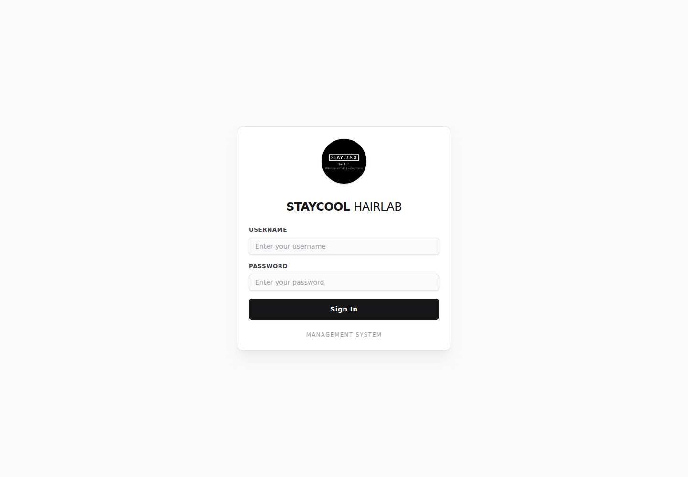
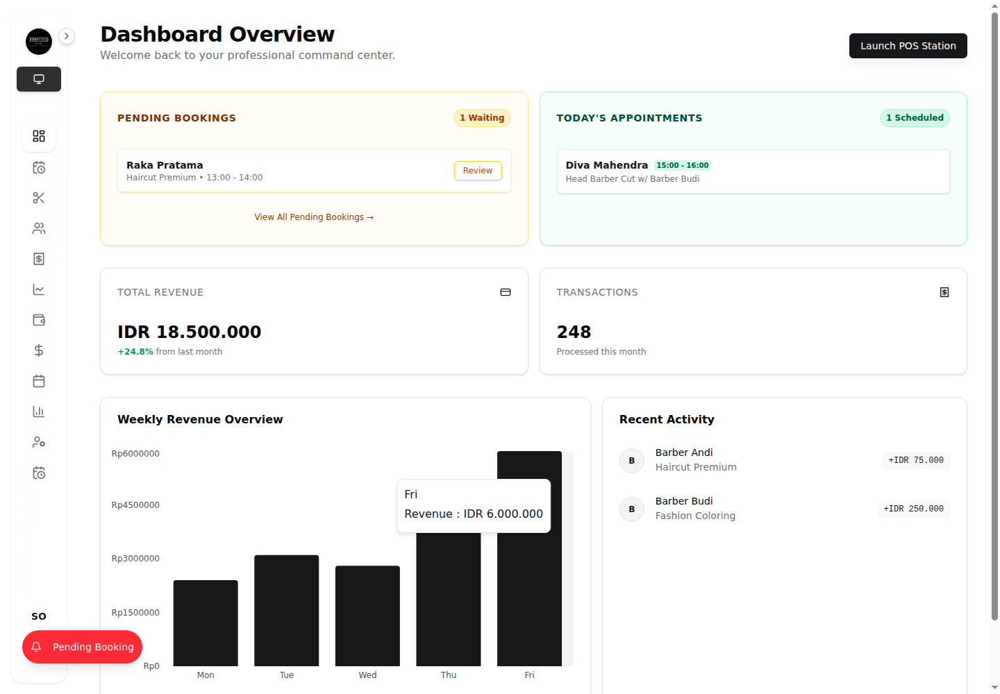
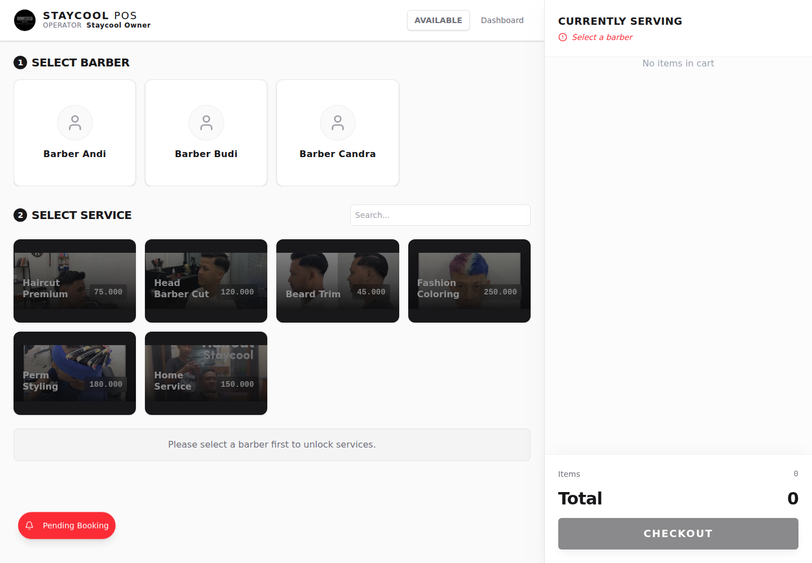
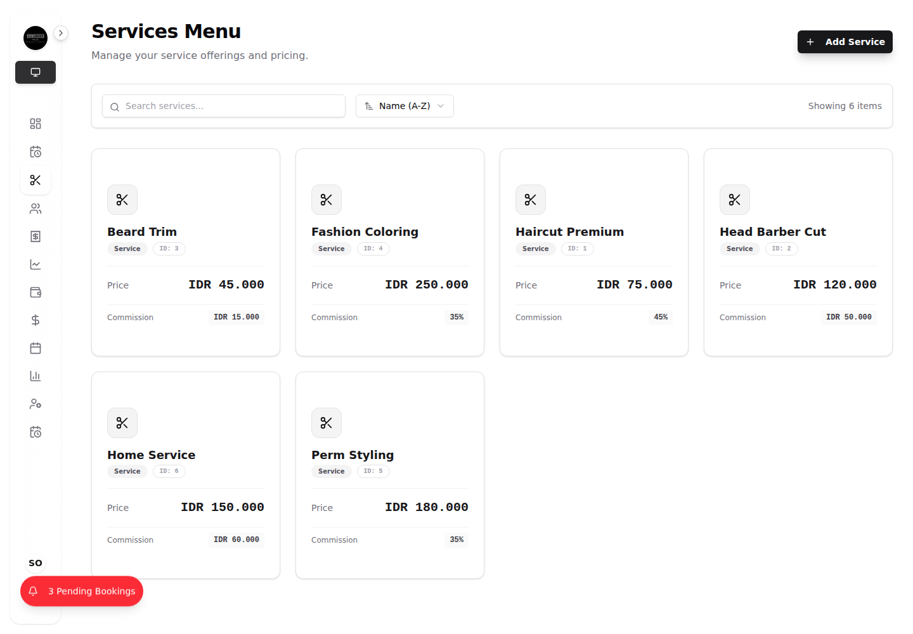
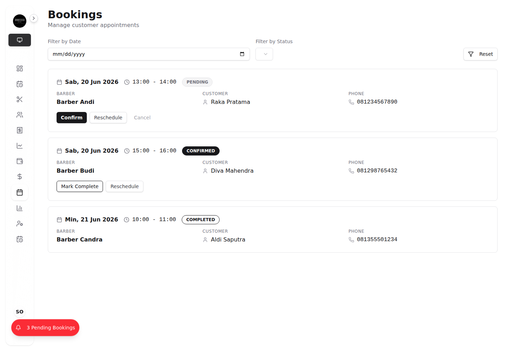
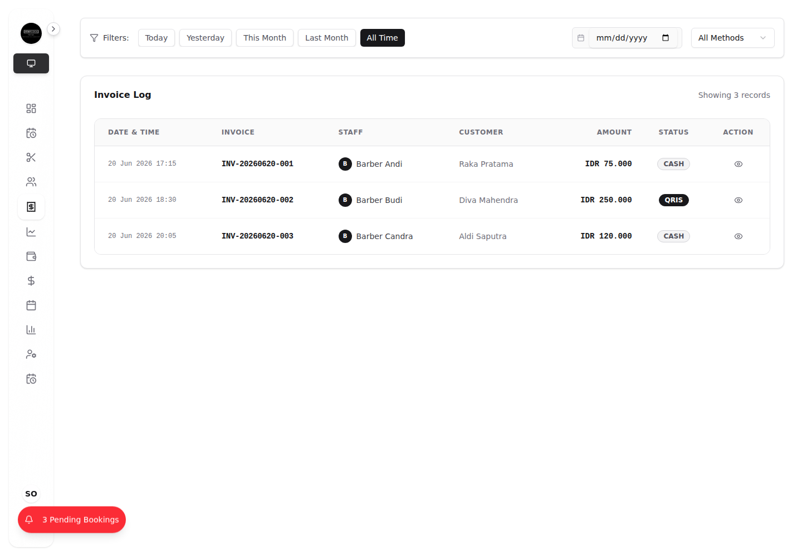
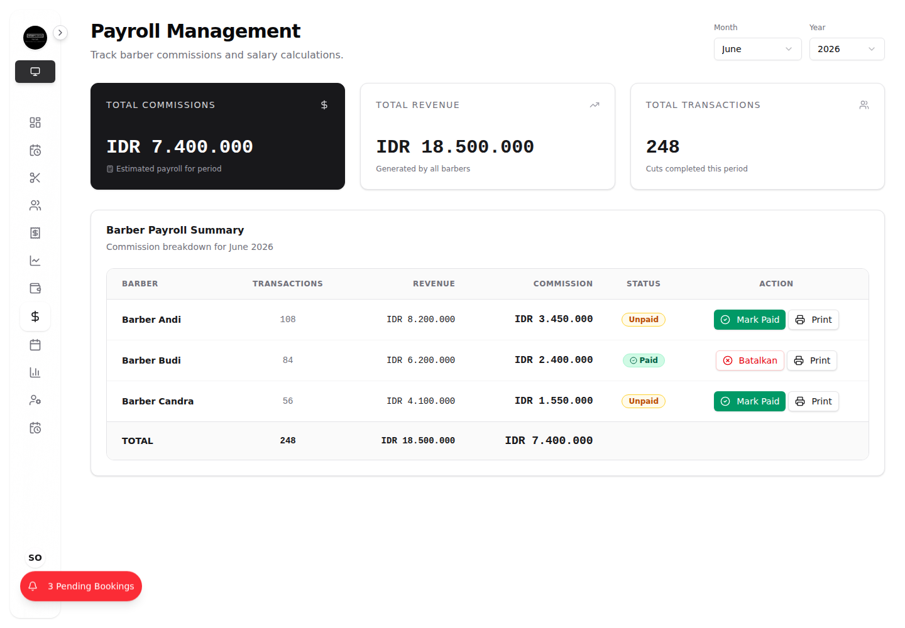
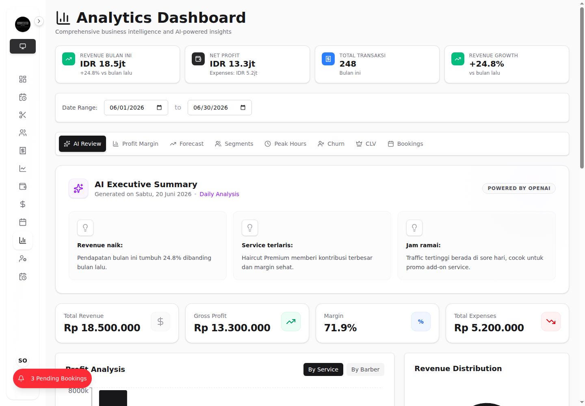
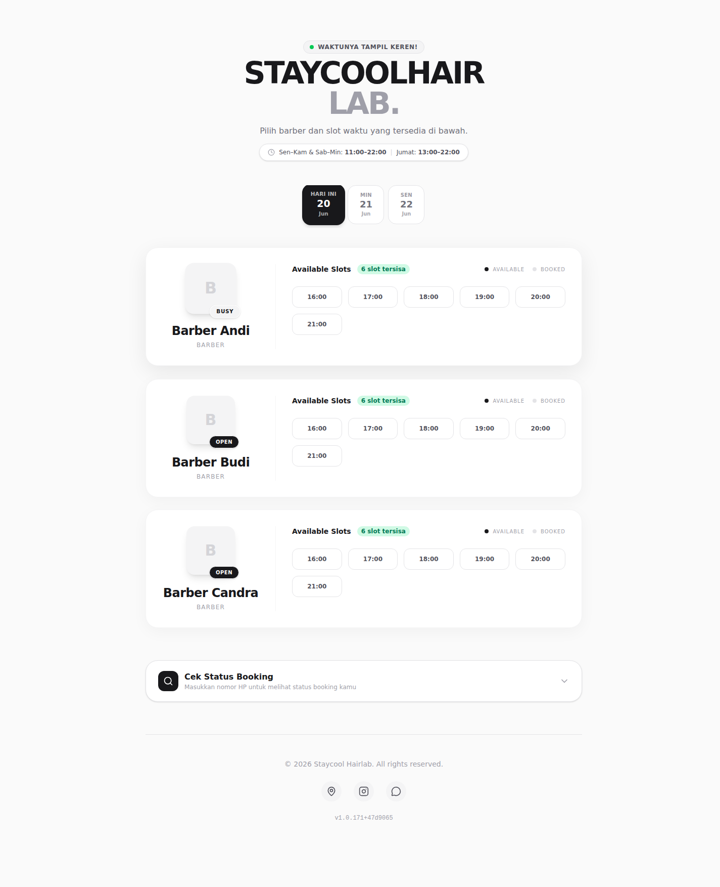

Full-Stack POS & Business Management System
Staycool POS is a full-stack point-of-sale and operations platform built for a modern barbershop business. It helps staff process daily transactions quickly while giving owners a clear dashboard for revenue, appointments, services, customers, expenses, payroll, and analytics.
The product combines a fast cashier workflow with owner-level business controls. Staff can run the POS station, select barbers and services, build a cart, and complete checkout. Owners can manage service pricing, monitor bookings, review transaction history, calculate barber commissions, and read business insights from one dashboard.
The interface uses a clean monochrome visual direction with a premium barbershop feel. It is designed to work well for tablet-based cashier workflows and desktop management dashboards.
Many small barbershops still track sales, barber commissions, bookings, expenses, and daily reports manually. This makes reporting slow, creates room for calculation mistakes, and makes it difficult for the owner to understand business performance in real time.
Staycool POS centralizes the main barbershop workflows into one system: authentication, POS checkout, service management, booking management, transaction history, payroll, and analytics. The result is a more reliable workflow for staff and clearer business visibility for owners.
The screenshots below were captured with Playwright using dummy data from .env.doc and mocked API responses, so the portfolio gallery can be generated without a local production database.
Owner username: owner
Owner password: 123456
Staff username: andi
Staff password: 123456
Edit PIN: 1234This gallery presents the complete product story: login, owner dashboard, cashier workflow, service catalog, booking operations, transaction reporting, payroll, analytics, and public customer-facing status.









I built Staycool POS, a full-stack barbershop management system that combines fast checkout, booking management, role-based authentication, payroll calculation, and owner-level business analytics. The app helps staff process daily transactions while giving owners clear visibility into revenue, appointments, services, customers, expenses, commissions, and operational performance.
Playwright is installed at the project root and was used to generate the portfolio gallery.
npm install --save-dev @playwright/test
npx playwright install chromium
npx playwright install chrome